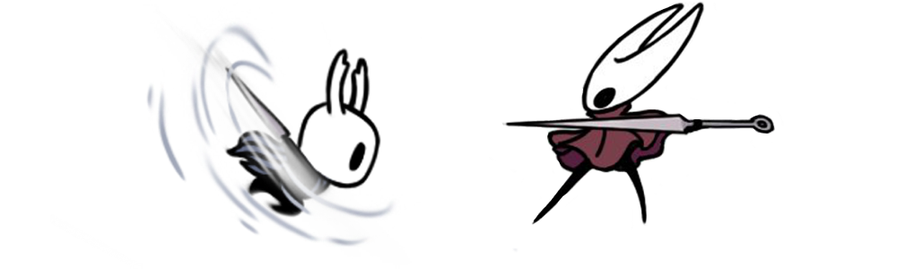
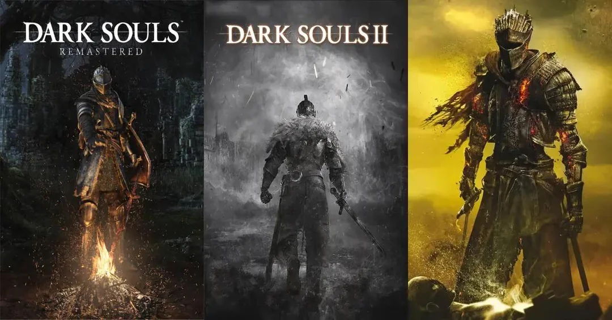

A desenvolvedora de jogos indie "Team Cherry" vem sendo notada nos últimos anos, com o lançamento de "Hollow Knight" em 2017 e agora em 2025 com sua sequência "Hollow Knight: SilkSong". Em ambos os jogos é possível tirar diversos novos gostos, seja por músicas, jogos desafiadores ou de mesmo estilo, narrativa interpretativa entre outros. Dada a escassez por jogos do gênero aqui você poderá conhecer algumas obras que abrangem a maioria dessas características.
| Dark Souls 1 | Dark Souls 2 | Dark Souls 3 | Bloodborne | Black Myth: Wukong |
|---|
Mesmo em uma época em que dificuldade era pouco atrativa, a empresa "FROMSOFTWARE" decidiu se arriscar e aprimorar um formato de jogos já existente e acabou criando uma nova categoria, o famigerado "SOULSLIKE", que consiste em um jogo com dificuldade elevada com o foco nos chefes do jogo.

Em um mundo condenado a morrer, onde os deuses estão em ruínas e a luz é apenas um eco distante, um ser amaldiçoado desperta em uma prisão esquecida. Marcado pela maldição dos mortos-vivos, ele atravessa reinos em decadência, enfrenta monstros lendários e ecos de deuses antigos, em busca de um destino: reacender a Primeira Chama e prolongar a Era do Fogo… ou deixá-la apagar, mergulhando o mundo em uma nova e desconhecida escuridão.
Assombrado por memórias perdidas e por uma maldição que o consome pouco a pouco, um viajante chega ao reino esquecido de Drangleic, um lugar marcado por guerras antigas e reis enlouquecidos pelo poder. Em busca de uma cura impossível, ele desvenda os pecados de um passado condenado e encara criaturas deformadas pelo tempo e pela loucura. Mas quanto mais ele avança, mais sua identidade se desfaz… até que resta apenas a escolha final: carregar um fardo eterno ou permitir que tudo se perca para sempre

Nas cinzas de um mundo que insiste em renascer, um Guerreiro das Cinzas ergue-se entre túmulos e ruínas quando a chama volta a se apagar. Os antigos Lordes das Cinzas se recusam a cumprir seu dever. Agora, ele deve caçá-los, trazer seus restos para o trono e decidir se o mundo merece mais um ciclo… ou finalmente o descanso. Com a realidade dobrando sobre si mesma e o passado colidindo com o futuro, tudo caminha para um fim inevitável: o último sacrar-se ou deixar as trevas reinarem de vez.
Na cidade amaldiçoada de Yharnam, onde o conhecimento é proibido e o sangue é venerado, um forasteiro chega em busca de cura… e encontra um pesadelo. A famosa transfusão de sangue, capaz de conceder milagres, esconde um preço terrível: a degeneração da mente, a deformação do corpo, a transformação em monstros. Mas sob as ruas manchadas de vermelho, sob os sussurros das igrejas e dos loucos, existe algo muito mais antigo do que a própria humanidade. Seres vindos de além das estrelas observam. Sonhos se tornam prisões. A realidade se desfaz. E enquanto a lua vermelha sobe ao céu, o caçador percebe que não está apenas lutando contra bestas… mas contra a própria verdade.
As lendas foram quebradas. Os deuses mentiram. E o herói foi esquecido. Quando o Rei Macaco cai do céu, não restam glória nem redenção — apenas ruínas, monstros e um mundo que deturpou todas as histórias que um dia foram sagradas. Inspirado na antiga jornada ao oeste, este não é o conto de um salvador… mas o de uma vingança etérea contra céus corrompidos. Enquanto espíritos, demônios e divindades caídas se erguem em seu caminho, Wukong caminha entre o mito e a realidade, mudando de forma, desafiando o destino e lutando contra o próprio conceito de ordem divina. A cada batalha, ele recupera um fragmento do que foi roubado. A sua história. O seu poder. Sua lenda.
| Tabela dos jogos mencionados | |||||
|---|---|---|---|---|---|
| Nome do jogo | Total de plataformas | Direções do Analógico | Dificuldade | Tempo de Jogo | Tamanho |
| Dark Souls | 9 | 360º | Difícil | 30 a 40 horas | 8GB |
| 7 | 8 | É como dirigir um carro pela primeira vez | 60 a 80 horas | 12GB | |
| 6 | 360º | Dirigir bêbado | 60 a 80 horas | 25GB | |
| Bloodborne | 2 | 360º | Deus me ajude | 30 a 35 horas | 41GB |
| Black Myth: Wukong | 3 | 360º | Escolha um deus e comece a rezar | 20 a 30 horas | 130GB |